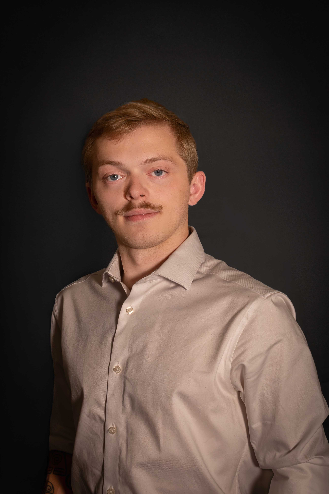
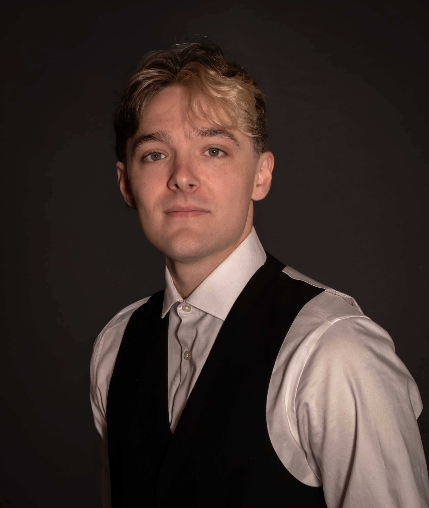
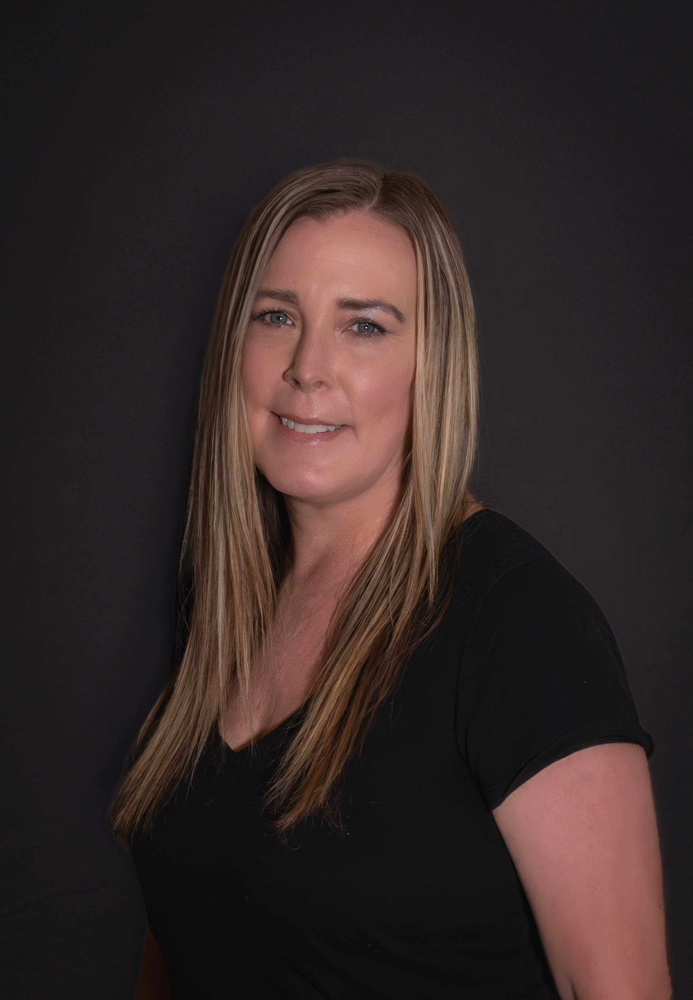
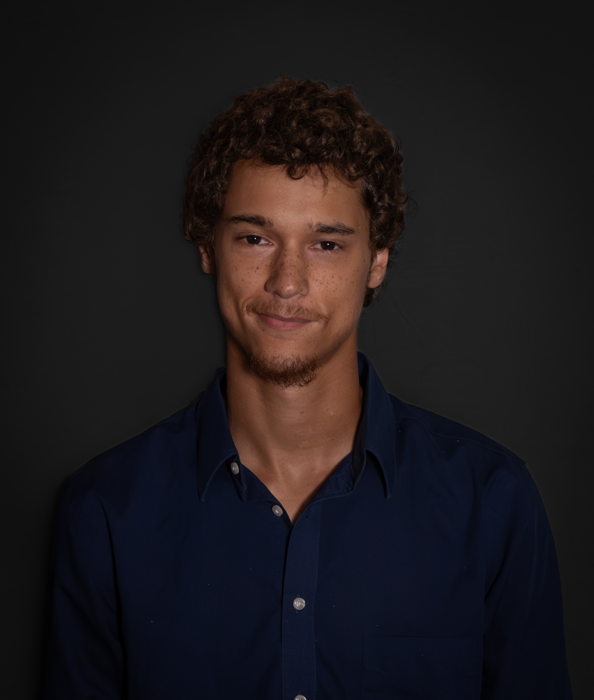

The people you'll actually see.
We prioritize relationship-first support so every Arcionis provider can offer consistent, high-quality continuity of care.

Tyler Rushing
As the Chief Executive Officer and co-founder of Arcionis Care Partners LLC, Tyler Rushing brings years of experience spanning leadership roles and direct, client-facing roles to provide overall operational leadership for the organization.
In his role, Tyler oversees the delivery of specialized Respite and Crisis Intervention services while directing cross-functional coordination with Regional Centers and authorized service entities across California. Combining strategic operational vision with a deep, grounded understanding of day-to-day participant care. Tyler is dedicated to expanding access to trauma-informed support and serving as a trusted partner for families, care coordinators, and therapy professionals alike.

Noah Stutesman
Noah Stutesman serves as Chief Financial Officer and co-founder of Arcionis Care Partners LLC. Driven by a passion for structural efficiency and fiscal accountability, Noah architected the agency’s foundational financial infrastructure; from general ledger strategy and banking partnerships to full payroll compliance and risk management systems.
In his role, Noah manages financial planning, expense classification, cash flow optimization, and corporate accounting. He works closely with executive leadership to ensure that every operational decision is backed by sound fiscal health, allowing direct support teams to focus on what matters most: delivering high-quality, person-centered care. Grounding his approach in transparency and long-term sustainability, Noah is dedicated to building an organization that honors its commitments to both its workforce and the individuals and families it serves.

Angela Mcpherson
Angie McPherson is the Chief Operating Officer and co-founder with more than 28 years of leadership and management experience, including the last four years dedicated to serving individuals with intellectual and developmental disabilities. She oversees company day-to-day operations, staffing, admissions, and regulatory compliance, ensuring every service is delivered with excellence, accountability, and a person-centered approach. She also leads Direct Service Supervisors and workforce operations, fostering a culture of teamwork, quality, and continuous improvement.
Angie's greatest passion is ensuring that every individual is treated with dignity, respect, and compassion while receiving the highest quality of care. She believes every person deserves the opportunity to live a meaningful, independent life and is committed to building programs that empower both the individuals served and the professionals who support them. Through strong leadership, operational excellence, and unwavering advocacy, Angie strives to create lasting, positive outcomes for the people, families, and communities her organization serves.

Michael Buckner
Michael serves as Chief Program Officer and co-founder. Alongside our COO, Michael oversees company day-to-day operations, staffing, admissions, and regulatory compliance, making sure individuals and families get care that is reliable, and centered around their needs. Michael is also responsible for the overall staff training plan and coordinating with our COO in implementation.
He cares deeply about building programs where people are treated with dignity, feel safe, and are supported in the community in meaningful ways. Michael works closely with staff, families, regional centers, independent facilitators, and each person’s support team to make sure services actually fit the individual.